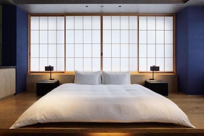
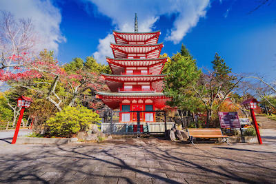
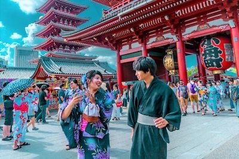

Ora mettiti comodo e scopri perché siamo i più consigliati per scoprire il giappone:
Ogni giorno un posto diverso.
Ti porteremo ogni giorno a visitare un posto nuovo. Ogni sera dormirai in un albergo tradizionale diverso, per poter vivere sempre l'atmosfera della tradizione.

Quante cose da vedere! ma in quanto tempo?
Questo è un paese ricco di storia e curiosità. le cose da vivere e vedere sono molte. noi offriamo esperienze personalizzate in base al tempo e budget che avete

Gambe in spalla!
Viaggeremo molto per visitare bene ogni meta e lasciarvi pienamente soddisfatti della vostra esperienza, quindi preparatevi a dovere!

Prezzi diversi per esigenze diverse:
Sappiamo quanto il Giappone possa essere una meta onerosa, quindi vogliamo darvi una panoramica delle nostre offerte cosi che possiate farvi una idea di quello che spenderete tra viaggio e soggiorno:
Pacchetto base:
Per vivere una esperienza modesta ma completa
1 settimana di permanenza
Mete studiate per sfruttare al meglio gli spostamenti
abbonamento shinkansen compreso per ogni spostamento per tutto il soggiorno
Lista dei migliori locali per street food e ristoranti in omaggio
soggiorni nelle varie strutture comprese nel prezzo
Pacchetto Medium:
Per vivere una esperienza più approfondita e vivere di più la cultura del luogo
Due settimane di permanenza
tutto ciò che è incluso nella prima opzione
visita ad Harajuku: la fucina di stili di strada e tendenze giovanili
escursione sul monte fuji
visita approfondita di kyoto
visita all'isola di miyajima
Pacchetto Premium:
Una esperienza pensata su misura per soddisfare i più esigenti e curiosi : 3 settimane di viaggi e escursioni nei luoghi più belli e suggestivi.
tre settimane di permanenza
tutto ciò che è incluso nelle prime due opzioni
visita approfondita a nara: la città fuori dal tempo, per ammirare il Todai-ji.
Due notti a Osaka: scoprirete la vita notturna e colorita della città.
Visita alla citta di Himeji e al suo castello
Visita a Nikko : città nella prefettura di Tochigi (patrimonio UNESCO) e al santuario Toshogu.